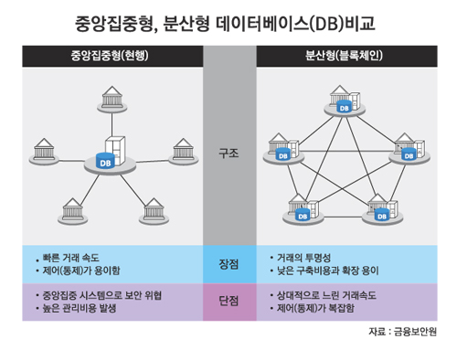

# 큰 그림으로 바라보기
# SW 아키텍처란 무엇이고 블록체인과 어떤 관계인가?
# 시스템 아키텍처
시스템 아키텍처 architecture: 구성요소를 구조화하고 구성요소 간 관계를 설정하는 방식
소프트웨어 시스템에 주로 사용되는 아키텍처는 두 가지로 다음과 같다.
- 중앙 통제
centralized방식 - 분산
distributed방식
중앙 통제 소프트웨어 시스템에서는 구성요소들이 모두 하나의 중앙 요소에 연결되며 중앙 요소를 가운데 두고 나머지 요소들이 빙 둘러싸고 있다.
분산 시스템에서는 시스템을 통제하거나 조정하는 요소 없이 서로 연결된 네트워크 구조를 형성한다.

[그림1] 분산 시스템 vs 중앙통제시스템 아키텍처
# 분산 시스템의 장단점
단일 컴퓨터와 비교할 떄 분산 시스템 distributed system 장점은 다음과 같다.
- 계산 능력이 더 뛰어나다
- 비용이 절감된다
- 더 안정적이다
- 자연스럽게 확장된다
분산 시스템의 단점은 다음과 같다.
- 조정 오버헤드가 발생한다
구성요소를 조정하는 중앙 요소가 없으므로 구성요소들 스스로가 조정해야한다. 그로 앤해 조정 오버헤드
coordination overhead가 발생. - 통신 오버헤드가 발생한다
조정을 위해서는 소통이 필요한데 서로 통신을 주고 받는다. 이로인해 계산 능력의 일부가 통신 프로토콜 지원과 메시지 송수신 처리 등에 소모된다. 그래서 통신 오버 헤드
communication overhead발생. - 네트워크 의존도가 높다
- 프로그램이 복잡해진다
- 보안이 중요하다
# 블록체인의 목적
블록체인의 목적은 분산 시스템의 무결성을 구현하고 유지하는 것이다.